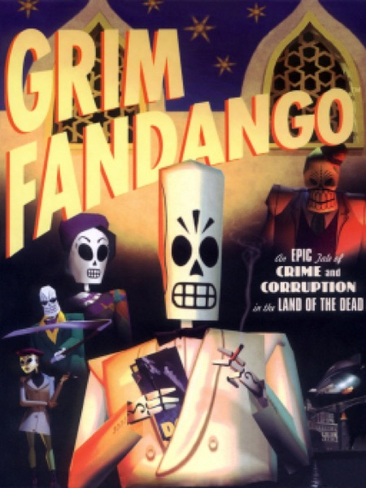

Adventure · 1998
Grim Fandango
Film noir in the land of the dead, with the best script LucasArts ever shipped.

Cover: Wikipedia: Grim Fandango
Facts
- Released
- 1998-10-30
- Genre
- Point & Click
- Category
- Adventure
- Platforms
- Mobile, PC, PlayStation
- Developers
- Lucasfilm Games
- Publishers
- Lucasfilm Games